Visuals
All visuals used should be professional, clean, welcoming, and include plenty of whitespace between elements.
Icons
Icons for the navigation will be lines without fill for a clean and professional feel. They will be 60px in width.
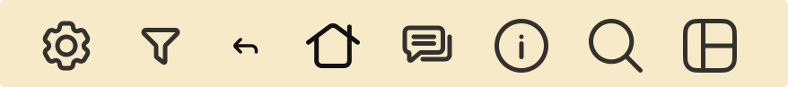
Icons used in the settings will be smaller and on a card therefore filled in for more contrast. They will be 30px in width since they will be on a clickable card.
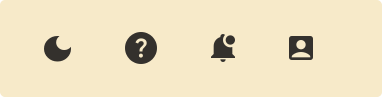
Buttons & Pressed States
Image Styles
All images used will be professionally taken or created with a clean and positive feeling.
Organization Images
These images are clean and professional looking. They should be inviting for refugees to feel comfortable reaching out.
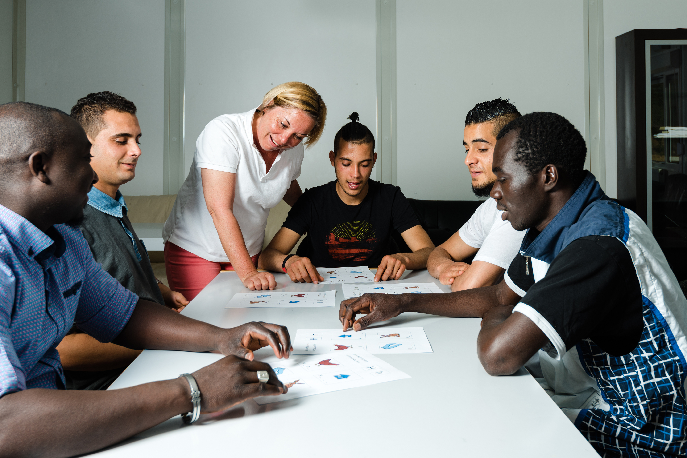
 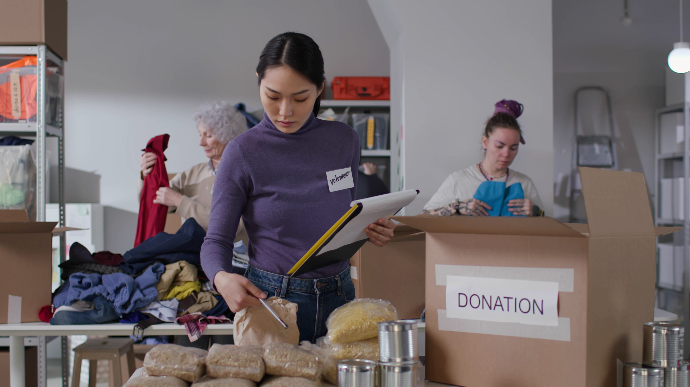
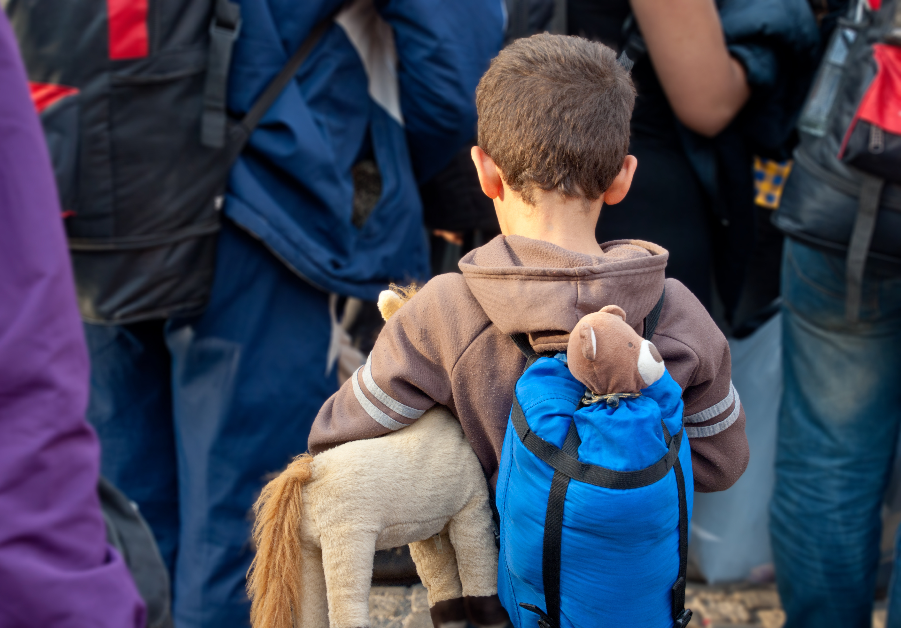
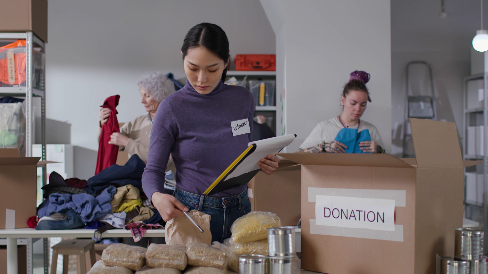
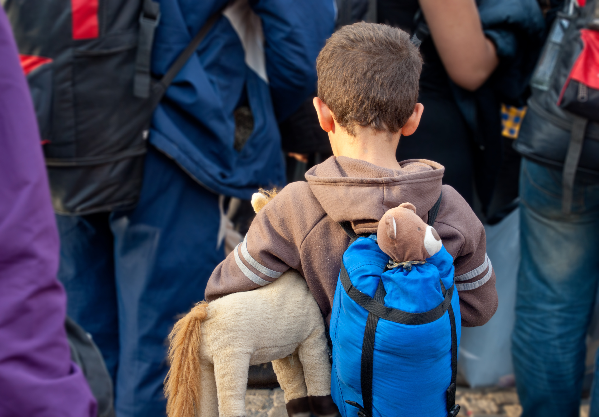
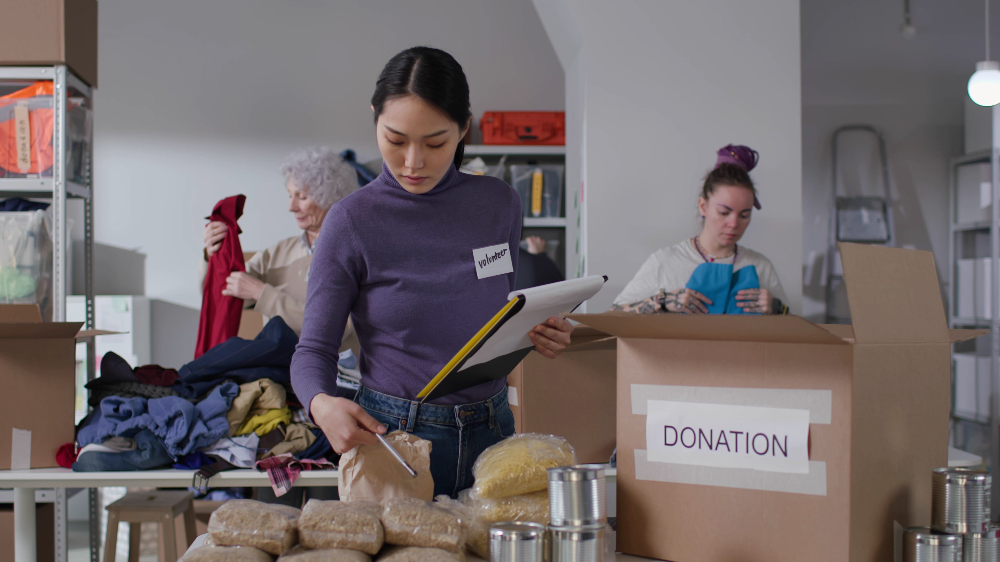
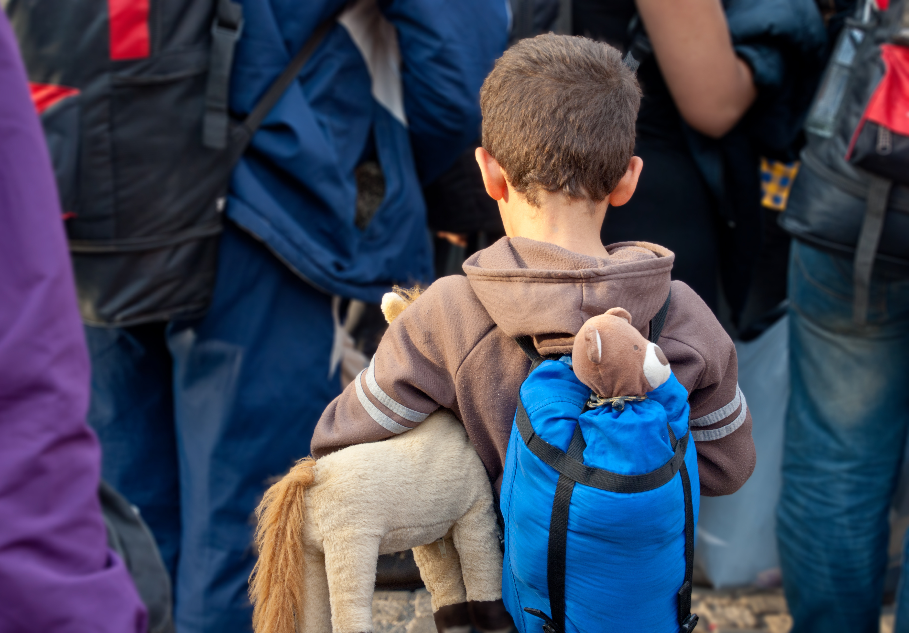
Refugee's Stories Images
Images related to the stories being told by the refugees themselves. Can pick from generated images if they would not like to post one.


 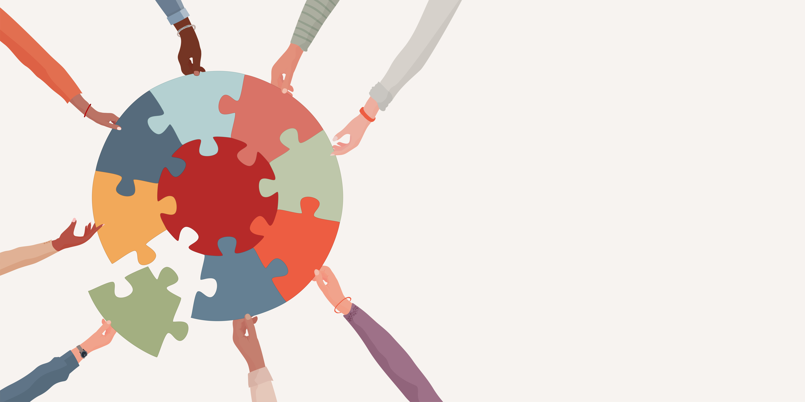
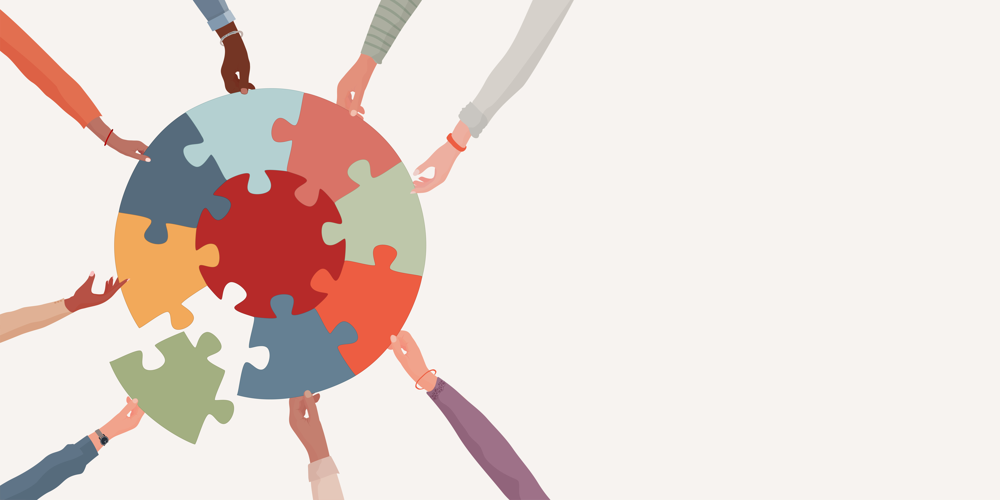
Profile Images
These are pictures of individuals using the app. They can be real or just characters or empty to the users desires.


Good News Images
Images reflecting positive world news to give refugees a safe place to browse news that is filteres to be neutral or positive.
 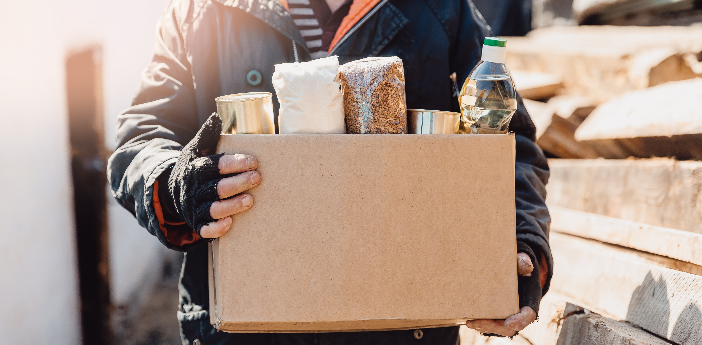
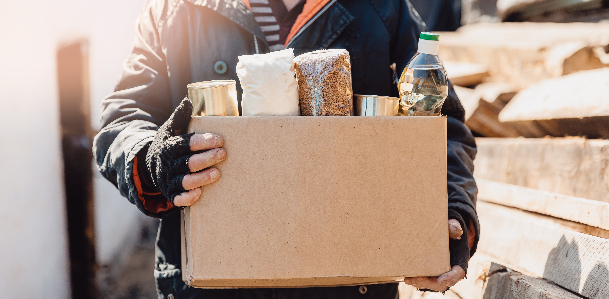


Layouts
With a 428px screen we have a margin of 69px, two 130px columns and a middle gutter of 30px for a total of 290px. For vertical spacing we went with 52px between items.